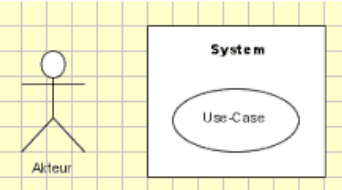
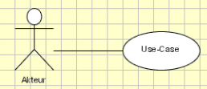
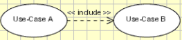
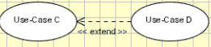
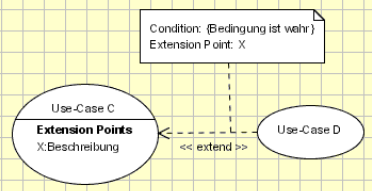

Use Case Diagramme
Akteur, System, Usecase

Einfaches Diagramm das anzeigt um was es geht.
Das Use-Case-Diagramm erfasst die Funktionalität und die Anforderungen des Systems mit Hilfe von Akteuren und Anwendungsfällen. Use Cases modellieren die Dienste, Aufgaben und Funktionen, die ein System ausführen muss.
- System: Container (Funktion, Dienst, ... )
- Aktuer: Wer startet den Usecase
- Use-Case: Was wird gemacht
Verbindungen

Normale Verbindung
Gibt an wer den Use-Case startet

Include: Nächster Use-Case muss mit ausgefürt werden.
Beim Niesen werden die Augen geschlossen

Exclude: kann mit ausgefürt werden.
Nach dem Niesen sagt man Entschuldigung

Da die Ausführung bei einer extend-Assoziation von Bedingungen abhängt, müssen diese in irgendeiner Form im UML-Diagramm angegeben werden können. Im Folgenden sehen Sie eine extend-Assoziation einschließlich einer Bedingung und eines sogenannten Erweiterungspunkts.